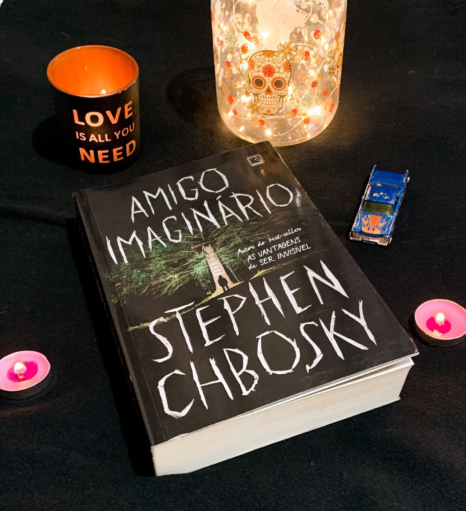

Amigo Imaginário
“Um pesadelo não é nada além de um sonho doente.”
Com uma narrativa que me lembrou bastante Stephen King, principalmente IT - Amigo Imaginário é uma obra que pode causar arrepios e ainda trazer reflexões.
Kate Reese está fugindo. Determinada a buscar uma vida melhor para ela e para o filho Christopher, ela abandona um relacionamento abusivo e escapa no meio da noite junto com seu garotinho. Eles acabam se sentindo atraídos pela agradável comunidade de Mill Grove, na Pensilvânia, uma cidadezinha distante de tudo e de todos, com apenas uma estrada de acesso.A princípio, Mill Grove parece o lugar perfeito para eles se estabelecerem. Porém, Christopher desaparece por seis longos dias sem deixar nenhum rastro. O desespero toma conta de Kate, e a polícia da cidade faz buscas incansáveis para descobrir o paradeiro do menino. Até que ele surge no meio da noite saindo de um bosque nos limites da cidade. Ileso, mas mudado. Christopher volta com uma voz na cabeça que apenas ele pode ouvir e com uma missão que apenas ele pode cumprir: construir uma casa na árvore no bosque da Mission Street antes do Natal; caso contrário, sua mãe e todos na cidade sofrerão as consequências.
O primeiro ponto que destacar é sobre a linda amizade que encontramos no livro entre Christopher, Eddie, Mat e Mike - impossível não lembrar do Clube dos Otários, pois aqui temos a amizade formada entre os excluídos. Os personagens são muito bem desenvolvidos, Kate a mãe de Christopher com toda certeza se destaca, afinal: ela faria qualquer coisa pelo seu filho. O livro é um calhamaço, contando com 770 páginas e detalhes sobre todos os aspectos da vida dos personagens. Nós entendemos os aspectos psicológicos, as motivações e traumas.
A parte que narra o mundo imaginário foi muito bem construída e se torna um mundo à parte nessa história.
A narrativa é feita em terceira pessoa e o autor utiliza metáforas de forma criativa e sabe trabalhar o suspense psicológico de forma incrível. Apesar de achar que algumas partes foram mais do mesmo e que o autor colocou cenas de “ação” demais o livro vale muito a pena.